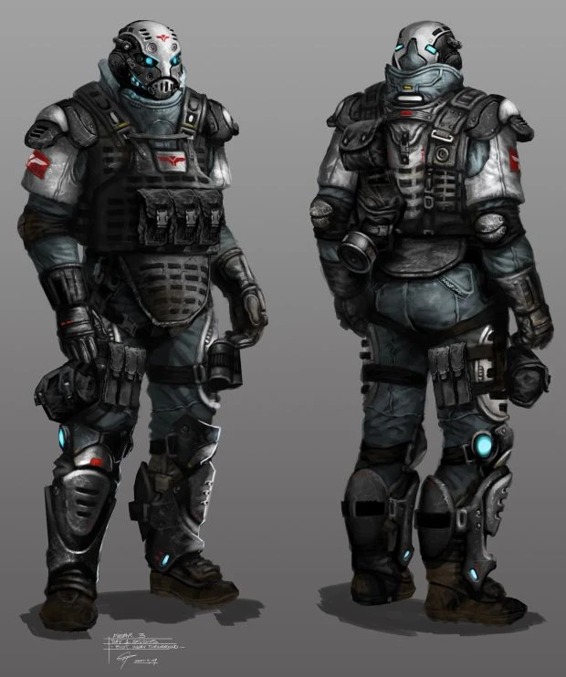

One thing that makes a world in a video games feel alive is the AI within the game.
Finite State Machines (FSM)
Finite state machines are exactly as they sound; they are finite and only have a certain number of actions it can do. Usually, these states are based on conditions, if a player is nearby, follow, if close enough to attack, then attack. While these aren’t entirely terrible, they aren’t the most intelligent and are usually easy to exploit, if the programmer never thought about specific scenarios.
Scripted AI
Scripted AI similar to FSMs are limited in their actions, but are scripted in a way to make them feel lively, but are rather one-sided with no unexpected behaviors. They are primarily used with specific logic written in them. Like walk to an area, say a line, then walk to the next area. Sometimes they do specific tasks based on a time system.
Behavior Trees
 Behavior Trees are a more advanced form of what FSM can be, where the AI will feel more naturally as they are more modular and react based on the situation they are in. A great example of this is from the F.E.A.R. series where the AI of soldiers will use actual tactics to get at you, think you are in a hallway with two ways to attack you, instead of blindly following one path and being gunned down by your character, they would rather devise a plan of either splitting up and taking both side (pincer maneuver) or throw a flashbang grenade before charging in. This bypasses the usual guesswork we humans tend to use as an advantage and make us more wary of positioning and routing in an unfamiliar place.
Behavior Trees are a more advanced form of what FSM can be, where the AI will feel more naturally as they are more modular and react based on the situation they are in. A great example of this is from the F.E.A.R. series where the AI of soldiers will use actual tactics to get at you, think you are in a hallway with two ways to attack you, instead of blindly following one path and being gunned down by your character, they would rather devise a plan of either splitting up and taking both side (pincer maneuver) or throw a flashbang grenade before charging in. This bypasses the usual guesswork we humans tend to use as an advantage and make us more wary of positioning and routing in an unfamiliar place.
